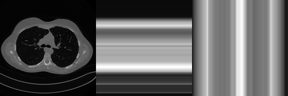

End-to-End Reconstruction and Imaging Architectures#
The End-to-End Reconstruction Viewpoint#
Once the supervised learning formulation is in place, the most immediate idea is to train a neural network that takes the measured datum as input and directly outputs the reconstructed image. This is what is usually called an end-to-end approach.
Formally, one chooses a parameterized family of maps
and trains it on examples \((\boldsymbol{y}_i^\delta,\boldsymbol{x}_i^\dagger)\) so that
The attraction of this strategy is immediate. At test time, reconstruction consists of a single forward pass through the network. Once training has been completed, inference is extremely fast compared with iterative variational methods.
However, this convenience has a price. The learned inverse map is not universal. It reflects the statistics of the training images, the forward operator used during data generation, the noise model seen during optimization, and the inductive bias of the architecture. For this reason, a responsible presentation of end-to-end methods must discuss not only their impressive speed and empirical quality, but also their domain dependence.
End-to-end reconstruction as approximation of an inverse map.
In classical inverse problems, one often solves
By contrast, an end-to-end network tries to approximate the reconstruction operator itself:
This means that training can be interpreted as an operator-learning problem. The network is not merely learning to denoise images. It is learning a map from measurement space to image space. This distinction is crucial, because in some inverse problems the datum and the image do not even live in the same domain.
For example:
in deblurring or denoising, the datum already resembles an image, so the learned map is image-to-image;
in tomography, MRI, or diffraction problems, the datum may be a sinogram, a set of Fourier coefficients, or some other indirect encoding, so the learned map is cross-domain.
This is one reason the architecture must be chosen carefully. The structure of the input space matters.
# Local image-to-image example: create a blurred and noisy observation from GoPro.jpg.
from pathlib import Path
def course_asset_path(name):
here = Path.cwd().resolve()
for base in (here, here.parent, here.parent.parent):
candidate = base / 'imgs' / name
if candidate.exists():
return candidate
raise FileNotFoundError(f'Could not locate imgs/{name} from {here}')
from PIL import Image
from IPython.display import display
import numpy as np
import torch
img = Image.open(course_asset_path('GoPro.jpg')).convert('L').resize((192, 192))
x_true = torch.tensor(np.array(img), dtype=torch.float32) / 255.0
x_true = x_true.unsqueeze(0).unsqueeze(0)
kernel = torch.tensor([[1.0, 2.0, 1.0], [2.0, 4.0, 2.0], [1.0, 2.0, 1.0]], dtype=torch.float32)
kernel = (kernel / kernel.sum()).view(1, 1, 3, 3)
blurred = torch.nn.functional.conv2d(x_true, kernel, padding=1)
noisy = (blurred + 0.03 * torch.randn_like(blurred)).clamp(0.0, 1.0)
panels = []
for tensor in [x_true, noisy]:
array = (255 * tensor.squeeze().numpy()).astype(np.uint8)
panels.append(Image.fromarray(array))
strip = Image.new('L', (384, 192))
strip.paste(panels[0].resize((192, 192)), (0, 0))
strip.paste(panels[1].resize((192, 192)), (192, 0))
display(strip)
print('Left: clean image. Right: simulated measurement used by an end-to-end reconstructor.')
Left: clean image. Right: simulated measurement used by an end-to-end reconstructor.
Loss design and its statistical meaning.
The standard supervised objective is
When \(\ell\) is the squared Euclidean loss, one obtains
As discussed in the introductory chapter, this pushes the network toward the conditional mean estimator. In many inverse problems this leads to reconstructions that are globally reasonable but locally too smooth. Fine structures may be averaged out because the network is rewarded for reducing average pixel-wise error, not for preserving every plausible high-frequency detail.
This motivates alternative losses:
\(\ell_1\) losses, which are often sharper at edges;
SSIM-type losses, which focus on structure rather than pure intensity mismatch;
perceptual losses, which compare feature representations rather than raw pixels;
adversarial losses, which encourage realism of the reconstructed image distribution.
At this point it is pedagogically useful to insist that the loss is not chosen after the model. It is part of the model. It decides what notion of reconstruction quality the training procedure optimizes.
CNN and UNet Design Principles for Imaging#
A fully connected network treats an image as an unstructured vector. This is mathematically legitimate but computationally and statistically wasteful. Images possess a spatial organization that should be exploited.
The key observation is simple: when interpreting an image, individual pixels are rarely meaningful in isolation. Classical convolutional architectures made this principle explicit already in early deep vision models such as [10]. What matters are local patterns such as edges, corners, textures, boundaries, and repeated motifs. These structures are spatially organized. Therefore, the architecture should process data locally before building more global information.
This is exactly what convolution achieves. Given an input image \(\boldsymbol{x}\) and a kernel \(K\), the discrete convolution is
Each output pixel depends only on a local neighborhood of the input. This induces the correct notion of locality for image analysis.
There are three major consequences:
local receptive fields;
parameter sharing;
translation equivariance, up to boundary effects.
Parameter sharing is particularly important. It drastically reduces the number of trainable parameters and thereby improves both efficiency and sample complexity.
Warning
Students often confuse locality with small importance. Local processing does not mean that global information is irrelevant. It means that global information is built progressively by composing many local operations.
import torch
import numpy as np
from PIL import Image
from IPython.display import display
image = torch.zeros(1, 1, 32, 32)
image[:, :, 8:24, 10:22] = 1.0
kernel_h = torch.tensor([[[-1.0, -2.0, -1.0], [0.0, 0.0, 0.0], [1.0, 2.0, 1.0]]]).unsqueeze(0)
kernel_v = torch.tensor([[[-1.0, 0.0, 1.0], [-2.0, 0.0, 2.0], [-1.0, 0.0, 1.0]]]).unsqueeze(0)
edge_h = torch.nn.functional.conv2d(image, kernel_h, padding=1).abs()
edge_v = torch.nn.functional.conv2d(image, kernel_v, padding=1).abs()
def to_pil(tensor):
array = tensor.squeeze().detach().cpu().numpy()
array = array - array.min()
if array.max() > 0:
array = array / array.max()
return Image.fromarray((255 * array).astype(np.uint8)).resize((224, 224))
panels = [to_pil(image), to_pil(edge_h), to_pil(edge_v)]
strip = Image.new('L', (224 * len(panels), 224))
for i, panel in enumerate(panels):
strip.paste(panel, (224 * i, 0))
display(strip)
print('Left: synthetic image. Middle and right: horizontal and vertical edge responses.')
Left: synthetic image. Middle and right: horizontal and vertical edge responses.
Padding and boundary effects.
In an actual implementation, one must decide what happens near the image boundary. This is where padding enters. Zero padding, reflection padding, and circular padding lead to different discrete operators. This is not a technical footnote. Boundary treatment affects the actual map computed by the network and can visibly change the reconstructions near the image border.
For a teaching roadmap, this is a good moment to tell students that the mathematical object implemented in code is always a discretized operator with conventions. Two networks that are both called CNN may not implement exactly the same operator if their padding rules differ.
Receptive field and why depth matters in CNNs.
One convolution is local. Several convolutions stacked together enlarge the effective receptive field. If one repeatedly applies \(3\times 3\) convolutions with stride \(1\), then after several layers each output pixel depends on a larger region of the input.
This is one of the first concrete examples showing why depth is useful in imaging. Early layers capture very local structures. Deeper layers gradually combine them into more global patterns. In inverse problems this is essential because many artifacts are not purely local. Ring artifacts, motion artifacts, undersampling effects, and aliasing patterns may involve larger spatial interactions.
import torch
impulse = torch.zeros(1, 1, 21, 21)
impulse[:, :, 10, 10] = 1.0
kernel = torch.ones(1, 1, 3, 3)
current = impulse.clone()
for depth in range(1, 5):
current = torch.nn.functional.conv2d(current, kernel, padding=1)
support = int((current[0, 0] > 0).sum().item())
width = int((current[0, 0].sum(dim=0) > 0).sum().item())
print(f'After {depth} convolution layer(s): support size = {support}, effective width = {width}')
After 1 convolution layer(s): support size = 9, effective width = 3
After 2 convolution layer(s): support size = 25, effective width = 5
After 3 convolution layer(s): support size = 49, effective width = 7
After 4 convolution layer(s): support size = 81, effective width = 9
The basic CNN.
A basic CNN is built from repeated blocks of the form
where \(\sigma\) is a nonlinear activation. This already provides a surprisingly effective image-to-image architecture. For denoising and mild deblurring, simple CNNs can work very well.
Their main strengths are:
simplicity of implementation;
strong locality bias;
parameter efficiency;
excellent compatibility with GPU computation.
Their main limitations are equally important:
limited multiscale reasoning if the architecture remains shallow;
possible difficulty in modeling long-range dependencies;
tendency to lose detail if information is compressed too aggressively.
Thus, the basic CNN is a natural starting point in the course, but not the endpoint.
# Mini supervised training loop on blurred Mayo patches.
from pathlib import Path
def course_asset_path(name):
here = Path.cwd().resolve()
for base in (here, here.parent, here.parent.parent):
candidate = base / 'imgs' / name
if candidate.exists():
return candidate
raise FileNotFoundError(f'Could not locate imgs/{name} from {here}')
from PIL import Image
import numpy as np
import torch
torch.manual_seed(0)
img = Image.open(course_asset_path('Mayo.png')).convert('L').resize((160, 160))
x_full = torch.tensor(np.array(img), dtype=torch.float32) / 255.0
patches = []
for i in range(0, 64, 16):
for j in range(0, 64, 16):
patch = x_full[i:i+32, j:j+32]
if patch.shape == (32, 32):
patches.append(patch)
clean = torch.stack(patches).unsqueeze(1)
kernel = torch.tensor([[1.0, 2.0, 1.0], [2.0, 4.0, 2.0], [1.0, 2.0, 1.0]], dtype=torch.float32)
kernel = (kernel / kernel.sum()).view(1, 1, 3, 3)
blurred = torch.nn.functional.conv2d(clean, kernel, padding=1)
noisy = (blurred + 0.02 * torch.randn_like(blurred)).clamp(0.0, 1.0)
train_x = noisy[:12]
train_y = clean[:12]
test_x = noisy[12:]
test_y = clean[12:]
model = torch.nn.Sequential(
torch.nn.Conv2d(1, 16, 3, padding=1),
torch.nn.ReLU(),
torch.nn.Conv2d(16, 16, 3, padding=1),
torch.nn.ReLU(),
torch.nn.Conv2d(16, 1, 3, padding=1),
)
optimizer = torch.optim.Adam(model.parameters(), lr=1e-2)
for epoch in range(200):
pred = model(train_x)
loss = torch.mean((pred - train_y) ** 2)
optimizer.zero_grad()
loss.backward()
optimizer.step()
if epoch in [0, 19, 99, 199]:
print(f'Epoch {epoch + 1:03d} | train loss = {loss.item():.6f}')
with torch.no_grad():
baseline = torch.mean((test_x - test_y) ** 2).sqrt().item()
cnn_err = torch.mean((model(test_x) - test_y) ** 2).sqrt().item()
print(f'Baseline RMSE on held-out patches: {baseline:.6f}')
print(f'Tiny CNN RMSE on held-out patches: {cnn_err:.6f}')
Epoch 001 | train loss = 0.026165
Epoch 020 | train loss = 0.002341
Epoch 100 | train loss = 0.000601
Epoch 200 | train loss = 0.000299
Baseline RMSE on held-out patches: 0.039515
Tiny CNN RMSE on held-out patches: 0.032031
Note
This example is still intentionally tiny, but it now shows the intended message more clearly: even a very small CNN can learn a useful deblurring map from a handful of local patches. The point is not state-of-the-art performance, but the transition from a handcrafted forward operator to a learned inverse map.
Residual learning as a reconstruction strategy.
A major conceptual improvement is residual learning. Suppose that one has an approximate image \(\widetilde{\boldsymbol{x}}\) which already contains most of the large-scale content, while the main task is to remove artifacts or restore detail. Instead of asking the network to predict \(\boldsymbol{x}^\dagger\) directly, one asks it to predict
The output is then reconstructed as
Why is this useful? Because in many tasks the residual has simpler statistics than the full image. If the corruption consists of blur, mild noise, or structured artifacts, then the difference between corrupted and clean image may be easier to model than the whole target image from scratch.
Residual learning also improves optimization. The network can fall back toward the identity map when appropriate, which often stabilizes training and helps gradient propagation.
Why multiscale architectures are needed.
A simple CNN processes images at a fixed resolution. This can be limiting because inverse problems often involve information at several scales simultaneously. Fine edges matter, but so do coarse geometric structures and global context.
For example, when reconstructing a CT slice, a small local patch may be insufficient to decide whether a faint pattern is an anatomical boundary or an artifact induced by undersampling. The answer may depend on the wider image context. This motivates encoder-decoder architectures.
UNet: encoder, decoder, and skip connections.
The UNet is the canonical multiscale architecture for imaging [13]. Its structure can be described in three stages.
First, the encoder progressively reduces spatial resolution while increasing the number of channels. This enlarges the effective receptive field and produces coarser, more abstract features.
Second, at the bottleneck the representation is highly compressed but rich in global context.
Third, the decoder upsamples the features back to the original resolution and combines them with earlier encoder features through skip connections.
If \(E_\ell\) denotes encoder features at scale \(\ell\) and \(D_\ell\) denotes decoder features, a typical update looks like
where \(\Phi_\ell\) may involve concatenation followed by one or more convolutions.
The guiding intuition is elegant. Downsampling is good for context but bad for detail. Skip connections repair this loss by injecting high-resolution information back into the decoder.
# One optimization step of a tiny UNet on a local Mayo patch.
from pathlib import Path
def course_asset_path(name):
here = Path.cwd().resolve()
for base in (here, here.parent, here.parent.parent):
candidate = base / 'imgs' / name
if candidate.exists():
return candidate
raise FileNotFoundError(f'Could not locate imgs/{name} from {here}')
from PIL import Image
import numpy as np
import torch
torch.manual_seed(0)
img = Image.open(course_asset_path('Mayo.png')).convert('L').resize((64, 64))
x = torch.tensor(np.array(img), dtype=torch.float32).unsqueeze(0).unsqueeze(0) / 255.0
kernel = torch.tensor([[0.0, 1.0, 0.0], [1.0, 4.0, 1.0], [0.0, 1.0, 0.0]], dtype=torch.float32)
kernel = (kernel / kernel.sum()).view(1, 1, 3, 3)
y = torch.nn.functional.conv2d(x, kernel, padding=1)
class TinyUNetTrain(torch.nn.Module):
def __init__(self):
super().__init__()
self.enc1 = torch.nn.Conv2d(1, 8, 3, padding=1)
self.enc2 = torch.nn.Conv2d(8, 16, 3, stride=2, padding=1)
self.dec = torch.nn.ConvTranspose2d(16, 8, 2, stride=2)
self.out = torch.nn.Conv2d(16, 1, 3, padding=1)
def forward(self, z):
e1 = torch.relu(self.enc1(z))
e2 = torch.relu(self.enc2(e1))
d = torch.relu(self.dec(e2))
return self.out(torch.cat([d, e1], dim=1))
model = TinyUNetTrain()
optimizer = torch.optim.Adam(model.parameters(), lr=1e-2)
with torch.no_grad():
initial_loss = torch.mean((model(y) - x) ** 2).item()
for _ in range(20):
pred = model(y)
loss = torch.mean((pred - x) ** 2)
optimizer.zero_grad()
loss.backward()
optimizer.step()
print('Initial reconstruction loss:', initial_loss)
print('Loss after 20 updates:', float(loss.item()))
Initial reconstruction loss: 0.028158316388726234
Loss after 20 updates: 0.0026300810277462006
The loss decrease is not yet a full training experiment, but it highlights the computational role of the UNet architecture. The skip connection lets the model preserve local spatial detail while still processing coarser encoded information.
import torch
class TinyCNN(torch.nn.Module):
def __init__(self):
super().__init__()
self.net = torch.nn.Sequential(
torch.nn.Conv2d(1, 8, 3, padding=1),
torch.nn.ReLU(),
torch.nn.Conv2d(8, 8, 3, padding=1),
torch.nn.ReLU(),
torch.nn.Conv2d(8, 1, 3, padding=1),
)
def forward(self, x):
return self.net(x)
class TinyUNet(torch.nn.Module):
def __init__(self):
super().__init__()
self.enc1 = torch.nn.Conv2d(1, 8, 3, padding=1)
self.enc2 = torch.nn.Conv2d(8, 16, 3, stride=2, padding=1)
self.dec1 = torch.nn.ConvTranspose2d(16, 8, 2, stride=2)
self.out = torch.nn.Conv2d(16, 1, 3, padding=1)
def forward(self, x):
e1 = torch.relu(self.enc1(x))
e2 = torch.relu(self.enc2(e1))
d1 = torch.relu(self.dec1(e2))
merged = torch.cat([d1, e1], dim=1)
return self.out(merged)
cnn = TinyCNN()
unet = TinyUNet()
count = lambda model: sum(p.numel() for p in model.parameters())
print('TinyCNN parameter count:', count(cnn))
print('TinyUNet parameter count:', count(unet))
sample = torch.randn(1, 1, 32, 32)
print('TinyCNN output shape:', cnn(sample).shape)
print('TinyUNet output shape:', unet(sample).shape)
TinyCNN parameter count: 737
TinyUNet parameter count: 1913
TinyCNN output shape: torch.Size([1, 1, 32, 32])
TinyUNet output shape: torch.Size([1, 1, 32, 32])
Why skip connections matter so much.
Without skip connections, fine spatial information can be lost during repeated downsampling. This is a severe issue in image reconstruction because the goal is not only to detect the presence of structures, but to reproduce them at the correct location and with the correct geometry.
Skip connections solve this by sending fine-scale information directly from encoder to decoder. This allows the model to use global context and local precision simultaneously. It is one of the main reasons UNets became dominant in medical imaging, microscopy, and many inverse-problems pipelines.
Common UNet variants.
Once the classical UNet is understood, variants become much easier to motivate.
Residual UNet.
Replace standard convolutional blocks by residual blocks, in the spirit of residual learning architectures such as [6]:
This improves gradient flow and allows deeper feature extractors.
Attention UNet.
Insert attention gates before skip fusion so that the decoder receives a weighted version of encoder features. This is useful when not all low-level details should be treated equally.
Dense or multi-branch variants.
Use denser feature reuse or multi-scale kernels inside each block. These choices aim to improve information flow and sensitivity to structures of varying sizes.
Beyond CNNs: Cross-Domain Methods and Vision Transformers#
Up to this point one may imagine that the input to the network already looks like an image. This is not always true. In tomography, for example, the measurement is a sinogram. In MRI, it is often undersampled Fourier data. In such settings one must decide whether to:
map the measurement directly to image space with a cross-domain network;
first compute a crude baseline reconstruction and then refine it with an image-domain network;
combine both strategies.
This is an important roadmap point for students. The phrase end-to-end does not imply image-to-image. It means direct learning from measured data to reconstructed images, regardless of whether these live in the same coordinate system.
# Toy cross-domain acquisition: row and column sums of a local CT-like image.
from pathlib import Path
def course_asset_path(name):
here = Path.cwd().resolve()
for base in (here, here.parent, here.parent.parent):
candidate = base / 'imgs' / name
if candidate.exists():
return candidate
raise FileNotFoundError(f'Could not locate imgs/{name} from {here}')
from PIL import Image
from IPython.display import display
import numpy as np
import torch
img = Image.open(course_asset_path('Mayo.png')).convert('L').resize((160, 160))
x = torch.tensor(np.array(img), dtype=torch.float32) / 255.0
row_sum = x.sum(dim=1, keepdim=True)
col_sum = x.sum(dim=0, keepdim=True)
row_img = row_sum.repeat(1, x.shape[1])
col_img = col_sum.repeat(x.shape[0], 1)
panels = []
for array in [x, row_img / row_img.max(), col_img / col_img.max()]:
panels.append(Image.fromarray((255 * array.numpy()).astype(np.uint8)))
strip = Image.new('L', (160 * 3, 160))
for i, panel in enumerate(panels):
strip.paste(panel.resize((160, 160)), (160 * i, 0))
display(strip)
print('Original image, row-sum data, and column-sum data. This illustrates why some inverse problems are cross-domain.')

Original image, row-sum data, and column-sum data. This illustrates why some inverse problems are cross-domain.
This is a simplified measurement model, but it is pedagogically useful because the input is no longer an image in the ordinary sense. It helps students see why a cross-domain inverse problem is structurally different from denoising or deblurring.
Vision Transformers.
The next architectural leap is the use of attention. A transformer does not impose locality in the same strong way as a CNN. Instead, it allows each token to interact with every other token.
In a Vision Transformer, the image is split into patches that are embedded into vectors, following the basic design introduced in [4]. If \(Z\) denotes the matrix of patch embeddings, self-attention computes
followed by
This operation allows long-range interactions to be modeled explicitly. In imaging this can be extremely useful when distant regions are statistically coupled or when artifacts have a global structure.
Warning
A transformer is not automatically better than a CNN for imaging. If the dataset is limited and the task is strongly local, the convolutional inductive bias can still be a decisive advantage.
import torch
import math
torch.manual_seed(0)
patches = torch.randn(4, 6)
Wq = torch.randn(6, 6)
Wk = torch.randn(6, 6)
Wv = torch.randn(6, 6)
Q = patches @ Wq
K = patches @ Wk
V = patches @ Wv
scores = Q @ K.T / math.sqrt(Q.shape[1])
attention = torch.softmax(scores, dim=-1)
out = attention @ V
print('Attention matrix:')
print(attention)
print('Row sums (they should be 1):', attention.sum(dim=-1))
print('Output token shape:', out.shape)
Attention matrix:
tensor([[7.3263e-03, 1.5332e-03, 4.7519e-03, 9.8639e-01],
[1.8162e-02, 3.8693e-04, 3.9975e-03, 9.7745e-01],
[5.5308e-02, 4.3694e-01, 3.1995e-04, 5.0743e-01],
[2.6106e-03, 3.4267e-03, 9.9393e-01, 2.8017e-05]])
Row sums (they should be 1): tensor([1., 1., 1., 1.])
Output token shape: torch.Size([4, 6])
Why transformers are not an automatic replacement for CNNs.
It is tempting to present transformers as strictly more advanced than convolutions. This would be pedagogically misleading. CNNs have a strong inductive bias toward locality and translation equivariance, and this is often a virtue in imaging. Transformers are more flexible, but this flexibility comes with:
greater computational cost;
weaker locality bias;
higher data requirements in many settings.
Therefore, the right message for the class is not “ViTs replace CNNs”, but rather “attention is useful when global interactions matter and when the available data justify the weaker prior assumptions.”
This also explains the popularity of hybrid architectures that combine convolutional encoders with attention blocks.
Output Constraints, Data Consistency, and Limits of Pure End-to-End Learning#
Another topic that deserves explicit treatment is the final activation function. If the output image is known to lie in a certain intensity range, should the network enforce this through its last layer?
There is no universal answer. A linear output layer is flexible and easy to optimize. A sigmoid enforces a \((0,1)\) range but may introduce saturation. A ReLU enforces nonnegativity but can create dead regions. The correct choice depends on the preprocessing pipeline, the physical meaning of the image intensities, and the stability of training.
This is a good example of a general teaching principle: every architectural choice should be justified in terms of the inverse problem, not adopted by habit.
import torch
values = torch.linspace(-3.0, 3.0, 9)
print('Input values:', values)
print('Identity:', values)
print('ReLU:', torch.relu(values))
print('Sigmoid:', torch.sigmoid(values))
print('Tanh:', torch.tanh(values))
Input values: tensor([-3.0000, -2.2500, -1.5000, -0.7500, 0.0000, 0.7500, 1.5000, 2.2500,
3.0000])
Identity: tensor([-3.0000, -2.2500, -1.5000, -0.7500, 0.0000, 0.7500, 1.5000, 2.2500,
3.0000])
ReLU: tensor([0.0000, 0.0000, 0.0000, 0.0000, 0.0000, 0.7500, 1.5000, 2.2500, 3.0000])
Sigmoid: tensor([0.0474, 0.0953, 0.1824, 0.3208, 0.5000, 0.6792, 0.8176, 0.9047, 0.9526])
Tanh: tensor([-0.9951, -0.9780, -0.9051, -0.6351, 0.0000, 0.6351, 0.9051, 0.9780,
0.9951])
Data consistency and the main limitation of pure end-to-end learning.
Perhaps the most important conceptual warning in this chapter is the following. A pure end-to-end network is not guaranteed to produce outputs that are consistent with the measured data. Even if the reconstructions look plausible, they may fail the test
Sometimes the network learns approximate consistency because the training set rewards it indirectly. But this is not enforced by the architecture alone.
This is the main bridge to the next chapters. Once students understand the power of end-to-end methods, they should also understand why one seeks additional mechanisms to preserve physics:
self-supervised losses;
explicit data-consistency layers;
unrolled optimization architectures;
generative posterior methods.
# A network can improve image error without explicitly enforcing measurement consistency.
import torch
A = torch.tensor([[1.0, 0.0, 1.0, 0.0], [0.0, 1.0, 0.0, 1.0]])
y = torch.tensor([1.0, 1.0])
x_target = torch.tensor([1.0, 1.0, 0.0, 0.0])
candidate_1 = x_target
candidate_2 = torch.tensor([0.7, 0.7, 0.3, 0.3])
for name, candidate in [('target-like output', candidate_1), ('smoothed output', candidate_2)]:
image_error = torch.norm(candidate - x_target).item()
data_error = torch.norm(A @ candidate - y).item()
print(name)
print(' image-space error:', round(image_error, 4))
print(' data-consistency residual:', round(data_error, 4))
target-like output
image-space error: 0.0
data-consistency residual: 0.0
smoothed output
image-space error: 0.6
data-consistency residual: 0.0
This miniature counterexample explains why visual quality alone is not enough. Two outputs can be equally consistent with the data, but not equally close to the desired image. Pure end-to-end training does not guarantee that this distinction is handled in a physically meaningful way.
Summary#
This chapter should leave a clear pedagogical progression:
end-to-end reconstruction learns the inverse map directly;
the loss function determines what kind of estimate is being learned;
convolutions are natural because images are spatially structured;
CNNs are efficient and powerful but limited in multiscale and long-range reasoning;
UNets solve this by combining coarse context and fine detail through skip connections;
transformers introduce global attention but require more care;
pure end-to-end reconstruction is powerful, but data consistency is not automatically guaranteed.
Exercises#
Explain why parameter sharing is one of the central advantages of convolutional layers.
Compare a CNN and a UNet from the viewpoint of receptive field and spatial precision.
Give one inverse problem where a cross-domain architecture is more natural than a purely image-domain architecture.
Discuss one advantage and one risk of using a transformer-based architecture in computational imaging.
Further Reading#
A useful way to deepen this chapter is to compare architectures not only by visual outputs, but by the inductive bias they impose. When revising, students should ask which parts of an architecture encode locality, which encode multiscale reasoning, and which promote long-range interaction. This makes it much easier to understand why CNNs, UNets, and transformers succeed or fail on different imaging tasks.
A second useful direction is to compare these end-to-end models with the unrolled and plug-and-play methods discussed later in the course, where the forward model remains visible inside the reconstruction algorithm.